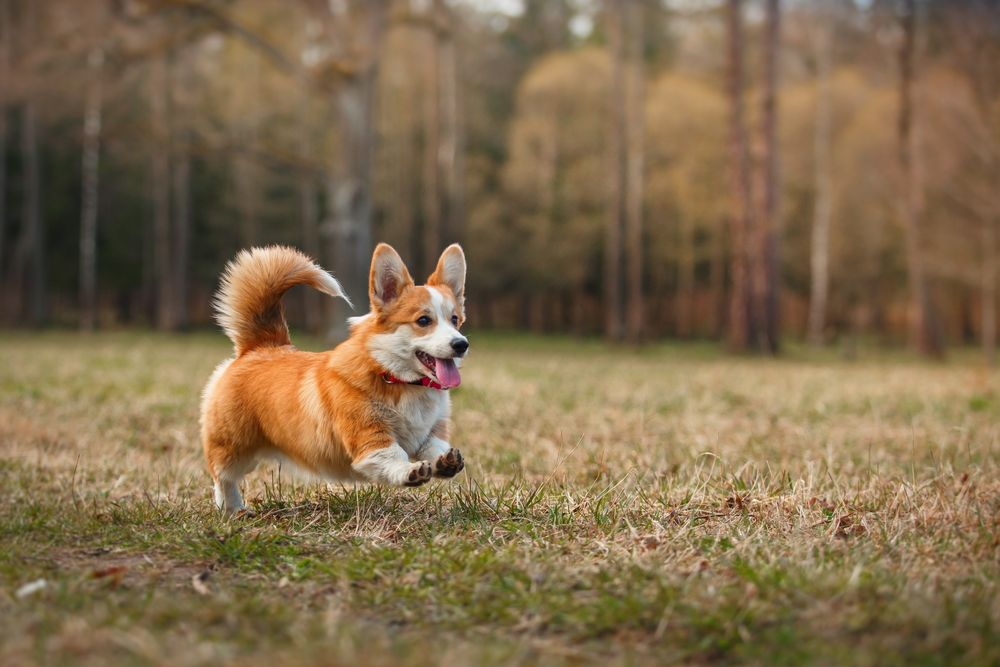

Drømmen om en corgi
Jeg er desværre ikke ejer af et kæledyr. Men min kæreste og jeg drømmer om at blive hundeejere en dag. Vi drømmer
om en corgi, som skal hedder Nanna eller Halfdan afhængigt af kønnet. Ja! Det hele lyder jo gennemtænkt og
klar. Vi mangler bare et sted at bo, hvor man må have en hund.

Herunder kommer lidt facts om, hvad vi kan se frem til:
- Corgier er kendte for deres korte ben, lange ryg og store øjne
- Corgier har et højt energiniveau og de elsker at løbe og lege
- Corgier er stædige: Hvis de ikke kan se meningen med en kommando, prøver de gerne at forhandle eller lave
deres egne regler
- En corgi er derforuden meget loyale og kærlige væsener
Vil du vide mere om corgier - så kan du finde meget mere info på linket her.